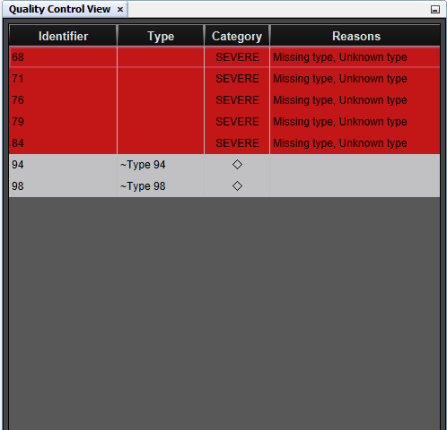

Quality Control View
Quality Control View Actions
| Constellation Action |
Keyboard Shortcut |
User Action |
Menu Icon |
| Open Quality Control View |
Keyboard Shortcut: Ctrl + Shift + Q
|
Views -> Quality Control View
|

|
| Select rows |
|
Left click row |
|
| Select multiple rows |
|
Hold shift and left click rows |
|
| Toggle row selection |
|
Hold ctrl and left click rows |
|
| Show all registered rules and scores |
|
Double click a row |
|
IMPORTANT!!!
Although Constellation provides this Quality Control View, the user remains responsible for ensuring that their data is acceptable for further analysis.
Introduction
The Quality Control View is a quick and easy way to look at nodes on the graph and determine whether or not they
have any obvious quality issues based on a series of rules built into Constellation. Selecting nodes in the graph
will cause them to be processed against any registered quality control rules, and ranked in the Quality Control
View according to their quality. This quality rating will be a given category (see below) along with reasoning as
to why they may pose a quality control issue. Users can then highlight rows in the quality control view and apply
options via the buttons at the bottom of the view.

Quality Control Categories
There are five levels of quality control categories for nodes that are selected.
- FATAL -
Any node which is specifically disallowed (whether it be disallowed for queries,
or simply should not be in your graph) will have a black background, and may be
blocked from further analysis.
- SEVERE -
Any node which is considered of particularly bad quality will have a red background,
but will never be blocked.
- WARNING -
Any node which is considered of very questionable quality will have a purple background.
- INFO -
Any node which is considered of questionable quality will have a blue background.
- DEFAULT -
Any node which is considered of good quality will have a white background. This
does not mean that these nodes are necessarily of high quality, only that no
quality control rules matched - such nodes require manual checking by the user.
Options
These options are accessible from the bottom of the Quality Control View
- Delete From Graph - Deletes the nodes highlighted in the Quality Control View from the graph.
- Select On Graph - Selects the nodes highlighted in the Quality Control View and deselects everything else in the graph.
- Deselect On Graph - Deselect the nodes highlighted in the Quality Control View from the selection in the graph.
- Zoom On Graph - Resets the camera on the graph to make every selected node visible.
- Category Priority - Allows you to view and change the quality category flagged for each of the registered rules.